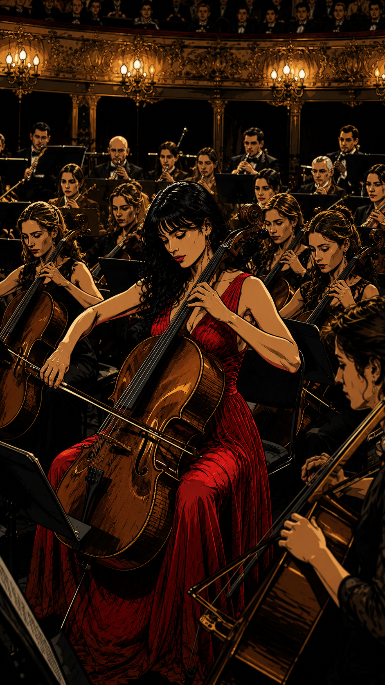
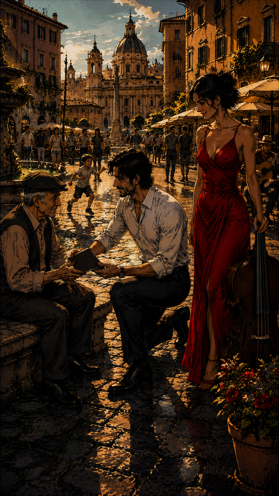

Navigation
ROC-Man präsentiert
Be Rich (Classic)
A Story of Nevio & Giulia
Manchmal hat Reichtum nichts mit Geld zu tun.
Geschichte entdecken ↓
Kapitel 1
Was noch fehlte
Nevio di Grande führte ein Leben, um das ihn viele beneideten. Er liebte schöne Dinge, schnelle Autos und das Gefühl, etwas erreicht zu haben. Nach außen schien ihm nichts zu fehlen.
Doch in den stillen Momenten spürte er es.
Da war etwas, das Erfolg nicht ersetzen konnte.
Nur wusste Nevio noch nicht, wonach er eigentlich suchte.
“I wanna be the best man of the world …”
Kapitel 2
Die Cellistin

Dann hörte er sie.
Nicht ihre Stimme – ihr Cello.
Giulia Mirabella stand auf der Bühne eines Konzertsaals. Mitte dreißig, selbstbewusst und vollkommen in ihrer Musik versunken.
Während sie spielte, schien die Welt um sie herum für einen Moment stillzustehen.
Nevio konnte den Blick nicht von ihr abwenden.
Kapitel 3
Die Begegnung
Nach dem Konzert begegneten sie sich.
Aus wenigen Worten wurde ein Gespräch. Aus einem Gespräch ein gemeinsamer Abend.
Giulia erzählte von Musik, von Träumen und davon, dass die besten Momente im Leben oft diejenigen sind, die man nicht planen kann.
Nevio hörte zu.
Zum ersten Mal wollte er nicht der Beste sein. Er wollte ein besserer Mann sein.
“I wanna be a better man for you …”
Kapitel 4
Was wirklich zählt

In den folgenden Tagen zeigte Giulia ihm ihre Welt.
Musik. Kleine Cafés. Nächtliche Straßen. Begegnungen mit Menschen, an denen Nevio früher vielleicht einfach vorbeigegangen wäre.
Er begann zu verstehen, dass man vieles besitzen und trotzdem nach etwas suchen kann.
Vielleicht bedeutete reich zu sein etwas ganz anderes.
“I will feel good. I will be rich.”
Kapitel 5
Be Rich
Es war spät geworden und draußen begann es zu regnen.
Nevio und Giulia saßen noch immer zusammen. Hinter der Scheibe verschwammen die Lichter der Stadt im Regen.
Kein großes Publikum. Keine perfekte Bühne. Kein Applaus.
Nur zwei Menschen und ein Moment, der ihnen gehörte.
Nevio sah Giulia an.
Vielleicht war das Reichtum.
Und vielleicht war dies erst der Anfang ihrer Geschichte.
“Be rich tonight.”